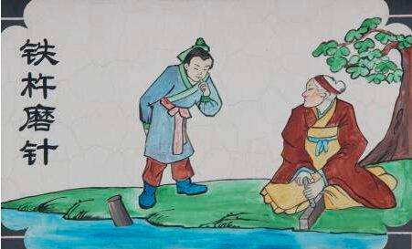

铁杵磨成针
这个故事讲述了李白小时候在母亲的启发下，看到一位老人在磨铁杵，决心要像他一样，坚持不懈地努力，最终成功。这也展示了坚持不懈的毅力和传统美德。
故事中的铁杵磨成针，象征着只要有毅力，就没有克服不了的困难。通过持续不断的努力，我们也能像磨针一样，完成看似不可能的任务。

这个故事讲述了李白小时候在母亲的启发下，看到一位老人在磨铁杵，决心要像他一样，坚持不懈地努力，最终成功。这也展示了坚持不懈的毅力和传统美德。
故事中的铁杵磨成针，象征着只要有毅力，就没有克服不了的困难。通过持续不断的努力，我们也能像磨针一样，完成看似不可能的任务。